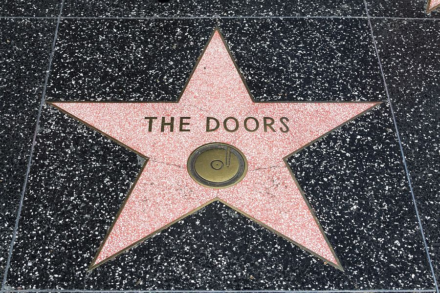
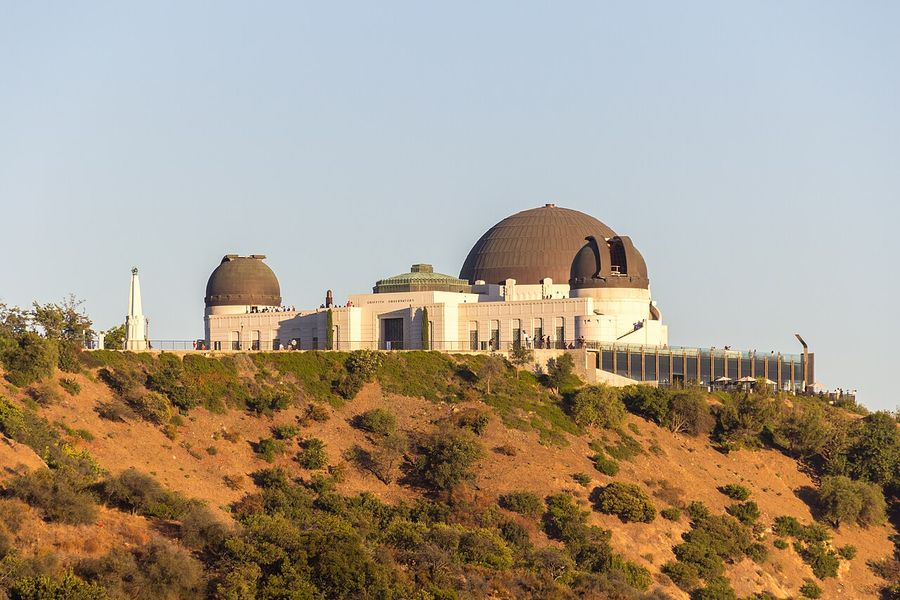
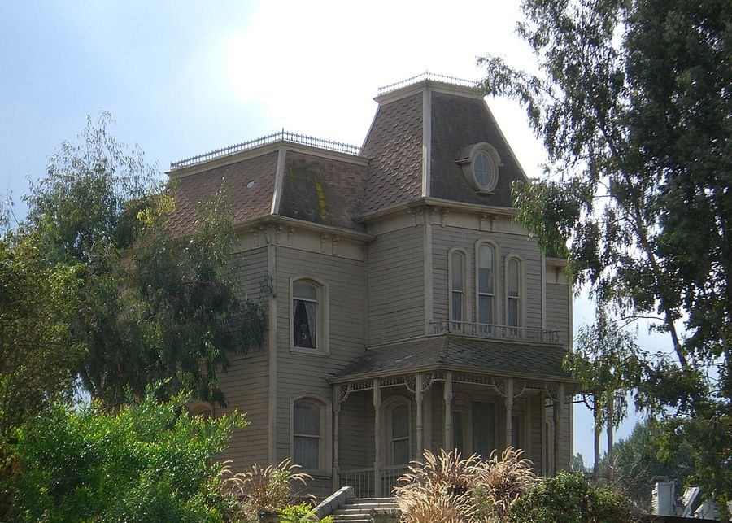
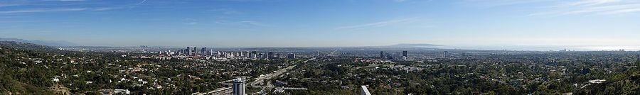
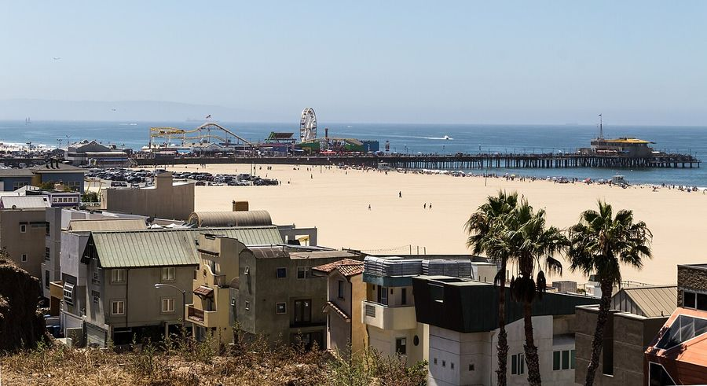
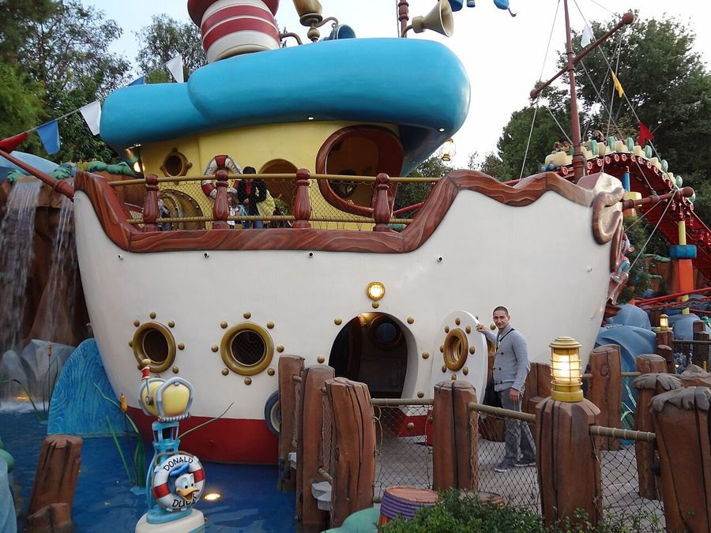
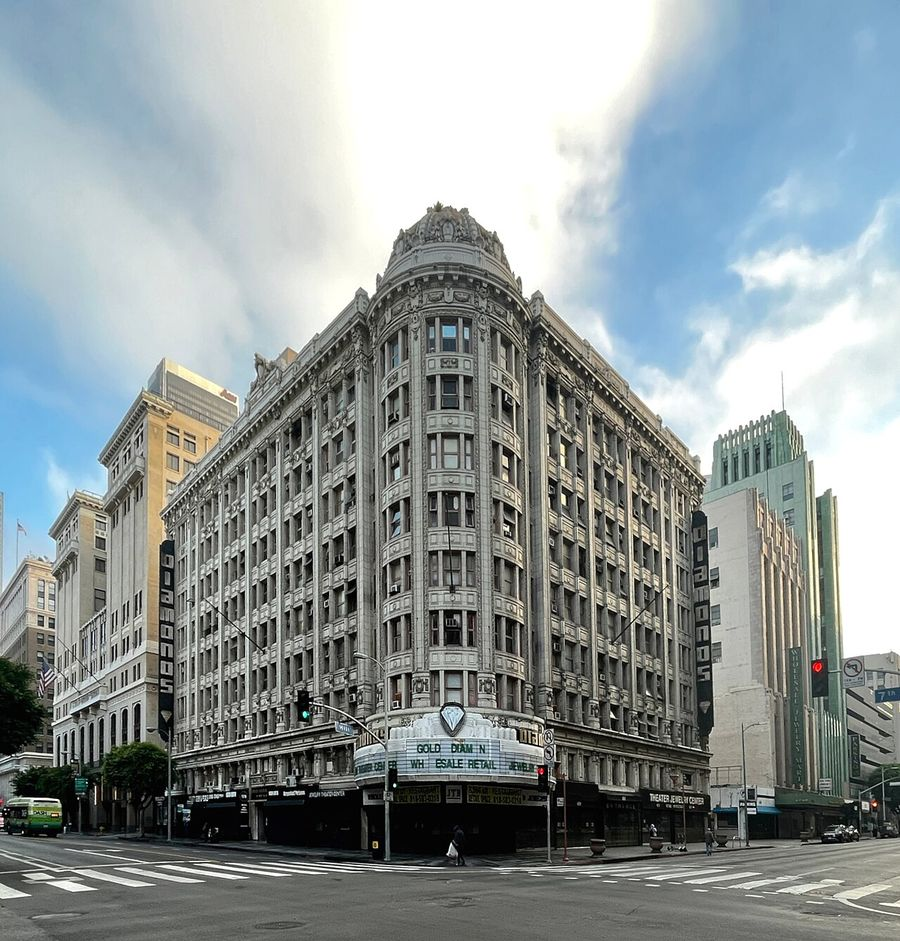

Los Angeles
United States · 33.7300°N 118.2700°W

Public domain
Make this Notebook Trusted to load map: File -> Trust Notebook
Điểm tham quan

Hollywood Walk of Fame & TCL Chinese Theatre
Griffith Observatory & biển hiệu HOLLYWOOD
Universal Studios Hollywood
Getty Center
Santa Monica Pier & Venice Beach
Disneyland Anaheim- LACMA, The Broad

Warner Bros / Paramount studio tour
Dệt may & smart textile
- - **Honeylove** — công ty trong hồ sơ ([`Honeylove/`](/root/c_semi/etextile_pitching/Honeylove/)), đặt tại Los Angeles; shapewear kỹ thuật với cấu trúc dệt định hình (structured knit / boning), NPV +74,9 M$ @25% theo mô hình trong hồ sơ. - **Ambercycle** (lập 2015, Los Angeles) — **molecular regeneration**: tách và tinh chế rác dệt sau tiêu dùng ở mức phân tử để tạo **cycora®**, polyester tái sinh phát thải CO₂ dưới một nửa polyester nguyên sinh. Gọi vốn 21,6 M$ Series A (H&M Co:Lab, KIRKBI, Temasek, Bestseller, Zalando) rồi thêm 27 M$; hợp đồng >70 M€ với Inditex; hợp tác Gap/Athleta (dùng cycora® ở quy mô từ 2026) và Far Eastern Group. Đây là đối chiếu quy mô lớn cho hướng vật liệu bền vững của **ALT TEX** trong hồ sơ. - **LA Fashion District** — cụm may/nguồn hàng lớn nhất bờ Tây; Cal Poly Pomona và Otis College đào tạo dệt/thời trang. - Lưu ý: **Skyscrape** (trong hồ sơ) ở **Portland, Oregon** — không phải cảng trong mạng lưới; LA là cảng gần nhất về mặt hệ sinh thái bờ Tây. --- nearest match was 1,958 km away; not used